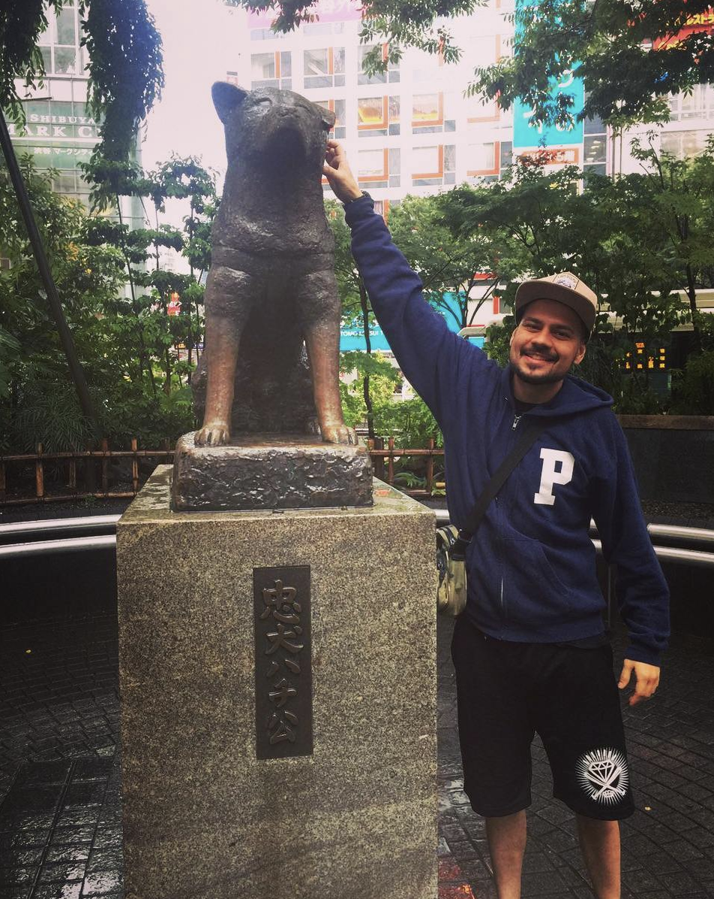

Experiência Profissional

Hobby
Meu principal hobby certamente é a música, faço isso a mais de 20 anos. Toco baixo em uma banda de hardcore de São Paulo, também atuo como produtor musical!
Abaixo alguns trabalhos que participei
Viagens
A viagem inesquecível
Ao lado foto com hashiko, em frente a estação de trem de Shibuya, em Tókio!

Abaixo alguns países que conheci
- 🇨🇱
- 🇨🇿
- 🇩🇪
- 🇭🇺
- 🇱🇺
- 🇩🇰
- 🇮🇹
- 🇳🇱
- 🇯🇵
- 🇨🇭
- 🇫🇷
- 🇹🇷